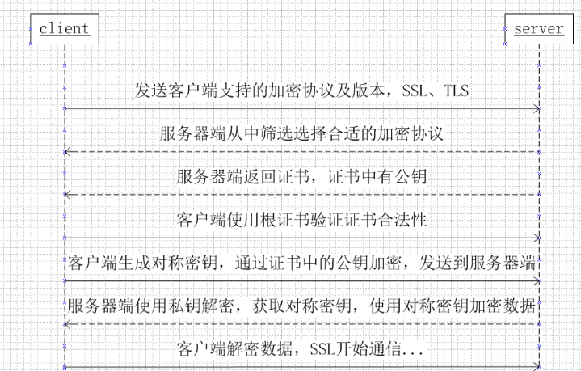

前言
想着之后要面试了，就看一下面试相关的一些题目，稍微做一下总结。
关于引用和指针的区别
突然遇到了就还是稍微总结一下两者的区别。可能不够完善，以后继续补充。引用是变量的别名，指针是间接指向了其他变量。
- 作为引用的变量本身sizeof的大小不确定，随着被引用变量而变化。而指针本身大小是固定的，一般在64位机中占用四字节。
- 引用在申明时必须初始化让其指向一个变量，但是指针可以不用（虽然这样存在风险）。所以一般在使用指针时都是先判断是否为空。但是引用不必。
- 算术运算符的区别，对一个引用变量做++/–运算是将被引用的变量值变化，而指针做++/–则是使指针指向下一个位置。
- 引用不可以改变指向，如果擅自修改引用指向，其实是修改了被引用的变量。指针可以修改指向。
- 引用一般来说比指针更安全，指针在释放之后变成了一个野指针，但是引用不存在空引用。
分时操作系统和实时操作系统
实时操作系统：当外界事件或者数据产生时，能够以足够快的速度接受并作出响应，其处理结果也能在足够快时间内做出响应。实现实时任务协调一致。 小的嵌入式操作系统经常需要实时操作系统，内核需要满足实时操作系统需求。
特征： 多任务，线程优先级，多级中断
分时操作系统：一台计算机可以同时为多个用户服务，将系统处理时间分成多个很小的时间片段，轮流给各个用户使用，由于时间片很小，所以各个用户感觉自己像在独占操作系统一样。
特征：交互性：用户与系统进行对话。多路性：多个用户使用同一块cpu。独立性：用户可彼此独立操作，不互相干扰。及时性：短时间内可以得到操作系统应答。
程序内存空间分布

从上图可以看出，一般来讲，栈空间存放的都是一些局部变量，或者形式参数。 堆空间中一般都是存放程序运行时申请的内存。
所以局部变量存放位置和全局变量不同。生命周期也是不同的。存放在全部空间的变量未初始化时值为0
C++虚函数
虚函数是C++中实现多态的机制，核心理念是通过基类访问派生类定义的函数。 因为派生类继承了基类的性质和地址范围，所以一般来讲派生类的空间大于基类地址空间，因此可以使用基类去访问派生类。函数的多态表现在“推迟联编”或者“动态联编”上。一个类的函数调用不是在编译时期被确定，而是在运行时才可以确定（也称运行时多态）。而相对于静态多态则是在编译时期表现出来的，效率较高，通过template 模板编程实现函数的泛型化。
overload（重载）具有相同函数名但是参数列表不同函数。和override（重写）派生类实现对基类继承而来的函数的重新编写。一般来讲基类的析构函数都要编写为虚函数。防止内存泄漏。
何时使用virtual：当设计一个类时，一个函数需要在基类和派生类表现出不同的性质，就需要使用。
http和https的区别
超文本传输协议用于在web浏览器和网站服务器间传输信息，http以明文的方式发送信息，不提供加密数据传输，如果攻击者截取了web浏览器和网站服务器间的http报文，就可以读取其中的信息。为了解决这一缺陷，使用另一种套接字层超文本传输协议HTTps，在http基础上加入了SSL协议，SSL证书可以验证服务器身份，并为web和服务器间的通信加密。https协议的主要作用是建立安全信道来保证数据传输的安全，还有确认网站的真实性。
区别：1. https协议需要ca证书，因此需要一定的费用。 2. http是超文本传输协议，信息是明文传输，https则是具有安全性的SSL加密传输。 3. https和http使用端口不同443 和80。 4. http的连接简单，是无状态的，https是http和SSL协议构建的可进行加密传输身份认证的网络协议。
https 工作流程：

优点：1. 确保数据正确发送到客户机和服务器 2. 防止数据在传输过程中被窃取和改变。
缺点：1. 握手（建立连接）阶段比较费时。2. https连接缓存不如http高效，会增加数据开销和功耗。 3. SSL证书需要花钱。
第一步：输入地址
当在浏览器输入网址时，浏览器已经开始匹配URL，他会从书签，历史记录等地方找到输入字符串可能对应的url。
第二步：浏览器查找域名的ip
- 当输入完域名后发起请求，然后对域名进行解析，首先会查找本机的hosts文件，如果有和域名对应的ip，就直接使用这个ip地址。
- 如果再本地没有找到对应的ip地址，会向本地DNS服务器发起请求，(本地DNS服务器一般是本地网络服务提供商，如移动，电信等。)
- 查询你输入的网址的DNS请求到达本地DNS服务器时，会先查询本地缓存，如果此条缓存有记录，则直接返回缓存对应的结果（这个过程是递归查询），如果没有找到记录，则会向根DNS服务器发起请求。
- 根域名服务器不会返回查找的结果，而是告诉本地DNS服务器可以继续到域服务器上继续查询，这个过程是迭代的过程。
- 本地DNS继续向域服务器发送请求，这样本地DNS服务器就可以知道用户请求的域名和ip的对应关系。
- 此时本地DNS服务器不仅要把结果返回给浏览器，还要将这个对应关系保存在缓存中。方便之后请求可以直接返回结果。
第三步：浏览器向web服务器发送http请求
此时浏览器会向已知的web服务器请求建立tcp连接，因为tcp协议是全双工，经过三次握手之后就可以相互间进行通信了。此时浏览器再向服务器发起http请求连接，http请求报文一般包含一下信息：
请求方法 URL协议版本
请求头
请求正文一般请求方法常用的是get和post方法。post一般用在填写表单后提交结果。在请求头和请求报文中还有一个空行，这个空行（\r\n）表示报文头部结束，下面是报文正文。
第四步：服务器的永久重定向响应
服务器给浏览器响应一个301的永久重定向响应，这样浏览器就会访问重定向后的新域名。
状态码301：表示旧地址被永久移除了，搜索引擎在获取新地址的同时也将就地址换成了新地址。
状态码302：表示旧地址的资源还在，只是暂时的从旧地址跳转到新地址。浏览器不会保存新地址。
第五步：浏览器跟踪重定向地址
重定向后浏览器知道了新的地址，会和新的地址建立http请求。
第六步：服务器处理请求
当服务器收到来自浏览器的http请求报文后，会将报文解析，进一步封装成响应报文，在一些大的网站不是直接使用http访问，而是通过Nginx，先请求到Nginx，再由Nginx请求服务器，将结果返回给客户端。Nginx的作用是反向代理，好处是当一个服务器挂了后，还是可以继续工作。
第七步：服务器返回一个http响应
服务器收到请求，并且处理后返回一个http响应报文，由三部分组成
状态行
响应头
响应报文在响应头和响应报文中有我们我们需要的具体信息，如cookie， html，image等。响应头和响应报文中间有一个空行表示头部信息结束。
第八步：浏览器显示html页面
在浏览器没有完全接收到html页面时就会开始渲染，请求过程是异步的，不会影响页面的渲染。中间涉及一些比较复杂的渲染过程。
进程间通信的方式
管道，消息队列，套接字（socket），共享内存，信号量。
管道： 半双工方式，只允许消息向一个方向流动，无名管道只允许在父进程和子进程间通信。 有名管道可以允许在非亲缘关系进程间通信。
消息队列：可以将不同进程格式化的字节流以消息队列的方式发送给任意进程。
套接字：在网络编程中可以实现不同主机上间的通信。
共享内存：速度快，时间简单
信号量：可以实现数据的封锁访问。实现进程的同步。
c和c++的区别
- 是是面向过程的语言，c++是面向对象的语言，举列子来说在设计一个简易的棋牌游戏时，c语言的思考方式是开始游戏，绘制画面，玩家一出牌，绘制画面，玩家二出牌。判断输赢。 而c++的设计思路则是一类对象设计游戏规则，一类对象设计两名玩家，一类对象初始化游戏画面等等。
- 内存管理，c使用malloc/free 向堆申请内存，c++使用new/delete从自由存储区申请内存（自由存储区是一个抽象的概念，并不实际存在，表示c++可以从不止包括堆以外的内存区申请内存）
- c++中的class是对c中struct的扩展，struct中访问成员是public，而class中默认是private。
- c++支持函数重载和函数重写。重载是相同名称的函数参数列表不同。重写是建立在virtual关键字的基础上，子类继承了父类的接口，为了实现子类的特定功能，通过对函数的重写实现。
- c++中有引用，c中没有c中（&）表示取地址。引用和指针的区别在于引用不必初始化，而且一定指向一个对象。表示对象的一个副本，指针则是通过指向对象的地址间接指向对象，但是指针可以修改指向的内容，而且指针必须初始化后才能使用。指针大小固定，都是64位机中的四字节。引用不固定。
define和inline的区别
define用于预处理阶段，预处理阶段的工作主要是宏替换，去注释。define只是单纯的代码替换，不会进行类型检查。容易出错。
inline主要用在一小块代码重复使用的情况下，使用inline代替，并且支持类型检查。但是导致代码膨胀。inline后面的函数会在运行时才进行参数替换。 也说到friend，使用friend修饰的友元函数可以访问类的私有成员，因此破坏了类的封装性。所以不建议使用friend关键字。
进程与线程
进程是资源分配的基本单位，进程控制块描述进程的基本信息和运行状态，创建进程和撤销进程都是对pcb的操作。线程是独立调度的基本单位，一个进程中可以有多个线程，共享进程资源。
区别：1. 线程不拥有资源，但是可以访问隶属进程的资源。 2. 同一进程中，线程的切换不会引起进程的切换，从一个进程的线程切换到另一个进程的线程时会引起进程切换。3. 创建或者撤销进程时，系统要为之分配或者回收资源，付出的开销大于创建或者撤销线程时的开销。4. 线程间的通信可以通过进程的数据进行通信。5.同一类线程共享代码和数据空间，每个线程都有自己独立的运行栈和程序计数器（PC）
进程拥有独立的数据和堆栈空间，创建一个进程时必须分配独立的资源，线程的开销比较小，不同线程间的切换速度也比较快，效率也比较高。
在通信机制方面，因为进程间不互相干扰，因此在管道，消息队列，套接字，共享内存等方面使用进程进行通信。
何时创建线程，何时创建进程：当需要频繁的创建和销毁时优先考虑使用线程。 当需要大量计算时优先使用线程。在并行操作时优先使用线程。
- Note:2019.9.12更新
程序编译运行过程和内存分布
- 内存分布
内存的基本构成：可编程区域在基本上上分为静态存储区，堆区和栈区（堆和栈一起称为动态存储区），内存在程序编译的时候就已经分配好了，这块内存在程序的整个运行周期都存在主要放静态数据，全局数据和常量。（这也就是我们常说静态全局变量的生存周期在整个程序运行期间。）
栈区：在执行函数时，函数内部的局部变量，函数的参数列表都会保存到栈上，函数运行结束时返回调用区域，这一步称为保护现场和回复现场。但是其空间有限，有时会出现stackoverflow（栈溢出），一般是由于程序在运行期间反复调用某一个函数而没有调用出口所致。
堆区：亦称动态内存分配的区间，程序运行时使用new（自由存储区）和malloc申请的内存区间，可以自行指定所需区间的大小，但是malloc需要计算空间，可以在空间不足时继续分配，new不能在原有空间上继续分配。注意这两个一般和free的delete配合使用，否则会造成内存泄漏，如果没有释放内存，申请的内存空间会在程序最后才释放。 使用动态内存时需要注意访问的范围，如果超过申请的内存空间范围，有时程序不会报错，但是由于存储的数据未知，会导致严重的后果。
因为是动态分配，所以上述空间在程序运行时才存在，在程序还未运行时（编译后）生成的文件中包括数据段和代码段。
代码区：存放函数体的二进制代码。
字符常量区：一些常量字符存放的位置，程序结束后由系统释放。函数指针所指向的位置一般就是数据区，堆区，栈区。
数据区:只读数据区，读写数据区。顾名思义，程序中的数据就是存放在这个位置，一些未初始化的变量会在程序运行初始化后开辟空间存放。
- 编译过程
预编译：与编译阶段主要对#的过程做处理，由头文件的展开，宏替换，去掉程序的注释，条件编译等。生成.i文件
编译： 检查语法，如果没有错误就会生成汇编带代码。
汇编：将汇编代码转换为机器代码。生一个二进制文件。
链接： 分为静态链接和动态链接。静态链接是把要调用的库函数链接到程序中，成为可执行文件的一部分。 动态链接所调用的函数代码并没有加入到可执行文件中，而是经过重定位，在程序运行期间当运行到该部分时采取动态链接库中执行相应的代码。
- Note:2019.9.13更新
SSH原理浅析
之前都有听说过这个协议，但是没怎么用过，刚好一起复习一下。
什么是SSH： SSH是一种网络协议，使用SSH远程的登陆另一台计算机，我么就可以认为这种登录是安全的。因此其目的就是为了实现安全远程登录以及其他网络安全服务。
SSH工作原理：SSH时通过对数据进行加密实现安全性的。加密方式主要有两种，1.对称加密 2.非对称加密 对称加密指加密解密使用同一套密钥。在客户端加密的密钥和在服务器端解密的密钥是相同的。对称加密的 安全强度很高，很难破解，但在实际运用中由于一个服务器会有很多的客户端，一旦一个客户端的密钥被窃取，就好导致整个系统的安全性不复存在。为了解决这个问题，就使用了非对称加密。非对称加密有两个密钥，“公钥”和“私钥”。其具有的特性是公钥加密的密文必须使用对应的私钥解密，而从公钥推理出私钥的可能性几乎为0.

上面是一个客户端登录远程服务器的过程1.客户端向服务器发起登录请求。2.服务器将公钥发送给客户端。3.客户端输入账号和密码，并使用公钥加密4.客户端将加密的密码发送给服务器。5.服务器用自己的私钥将登录密码解密进行匹配。并返回验证结果给客户端。
私钥是服务器独有的，这保证了客户端的登陆信息即使在网络中传输也不会被解密，保证了数据安全性。
认证！！
SSH工作流程：1.服务器开启SSH服务，在端口22监听客户端请求，2.客户端发出请求，如果是第一次域服务器建立连接，服务器会发送一个rsa key，而且这个rsa key会被记录到服务器端的 ~/.ssh/known_hosts中，3. 客户端收到来自服务器的rsa key后，就会使用和服务器协商好的加密算法生成会话密钥（用于两者间的通信）。并用rsa key加密会话密钥，发送给服务器。服务器用私钥解密会话密钥，然后同此会话密钥确认加密信息，然后发送给客户端。客户端用会话密钥解密加密的确认信息，到此密钥交换和服务器认证成功。
接下来是客户端的认证，使用基于口令认证和基于密钥认证。
基于口令认证：客户端会使用会话密钥加密用户名和密码发送给服务器进行匹配，服务器使用私钥解密后进行确认（容易收到中间人攻击）
基于密钥认证：客户端生成一对私钥（只用于身份认证），并将公钥发送给服务器，服务器收到公钥后使用公钥加密一段信息，并发送给客户端，客户端使用私钥解密，将数据与会话密钥进行散列后将信息发送给服务端，服务端将两部分信息进行比较，确认客户端是否匹配。
数据库索引的存储类型
索引的存储类型有两种，hash和btree。索引是单独存储在磁盘上的数据结构。他们包含对数据库表中所有记录的引用指针，可以加快对数据库特定数据的查询效率。
索引的优点：1. 通过创建唯一索引，可以保证数据库中每行数据的唯一性，2. 可以加快数据的查询速度。
索引的缺点 创建索引需要耗费时间，需要耗费更多内存。对数据库中数据进行删改时也需要对索引进行动态维护。
封锁
封锁粒度： mysql中提供行级锁和表级锁。 封锁粒度越大（表级锁），则并发度越低，但是系统开销也会越低。封锁类型。 读锁（共享锁/s锁）：加了s锁后还可以添加锁，但是不能加x锁。 写锁（排他锁/x锁）：加锁后不能再添加其他锁。 三级封锁协议 一级：对数据进行修改时必须加x锁。 避免了修改被覆盖。二级封锁协议：，在一级的基础上，再读取数据时必须加锁，读取结束后释放。 三级：在二级的基础上读取数据时加s锁，事务结束后释放。
为什么析构函数要申明为虚函数
当有子类继承一个父类时，我们可以使用一个父类指针指向一个子类对象，这样在对这个对象进行析构时，顺序是先析构子类对象，再析构父类对象，如果不使用虚函数，那么父类对象就不会被析构，如果父类中含有指针成员，就容易导致内存泄漏。
操作系统的作用
处理机管理，设备管理，存储管理，文件管理
处理机管理：主要是对进程的控制和管理，实现进程同步进程通信等。
设备管理：负责设备分配，设备处理.
存储管理：主要是对内存分配，地址映射内存保护的管理。
文件管理：文件存储空间的管理，目录的管理，文件读写管理和保护。
调度算法
- 先来先服务:如果先来的任务需要花费的时间更多,则等待的时间更久.
- 短作业优先.
- 优先级法
死锁的原因:资源竞争,进程推进方式非法. 产生条件:互斥条件,占有并等到,不可剥夺,环路等待.
局部性原理和页面调度算法
时间局部性:如果某个信息被访问,那么它在不久的将来也很有可能会多次被访问.
空间局部性:如果某个位置的信息被访问,那么他相邻的信息也很有可能会被访问到.
页面调度算法:
先进先出置换:类似于队列,总是最先淘汰进入内存的页面.有些数据可能会被频繁的进出,导致产生抖动.
LRU置换算法:最久未使用算法,记录页面中每个字段自上次访问后到现在所经历的时间,置换出时间最长的页面.
linux命令
shutdown ：执行关机
reboot：重启
vim命令： ：w 保存 ：q退出 ：wq保存和退出 ：q！不保存退出 ：w filename 另存为 ：set nu 显示行号 ：set nonu 不显示行号
挂载：挂载利用目录作为文件系统的进入点，进入目录后就可以读取文件系统的数据。
文件时间： modification（mtime）：文件内容更新就会更新 status time（ctime）： 文件属性/权限更新就会更新。 access time（atime）： 读取文件时就会更新。
touch： 创建新文件或更新文件时间
cp src dst ：复制文件
mv filename 路径： 移动文件
rm filename： 删除文件
chmod：切换模式
获取文件内容
cat：获取文件内容
tac：从最后一行获取文件内容
more： 可以一页一页的查看文件
less： 和more类似，只是多了向前翻页的功能
head： head -n 5 filename 显示文件前五行
tail： tail -n 5 filename 显示文件后5行
wc -l filename：显示文件行数
sed -i ‘1’d filename //删除文件第一行
sed -n ‘1’d filename //删除文件最后一行
指令/ 文件搜索
which ：查询指令所在目录
whereis ：文件搜索，速度较快，应位只搜索特定目录
locate：文件搜索，使用关键字或者正则表达式进行搜索。
find：文件搜索，可以使用文件属性和权限进行搜索。
网络
ipconfig //查看网络配置
ifdown 网课设备名 //关闭网卡
ifup 网卡设备名 //气用网卡
netstat -t //列出tcp协议端口 //-u 列出udp协议端口 //-l 仅列出在监听的端口 //-a 列出所有的连接 //-r 路由表
nslookup 翻译域名对应的ip和dns，其中 server（服务器）表示当前的DNS

ping ip 判断网络情况
hostname 显示主机名字
traceroute ip 路由跟踪命令
查看进程
ps // -A 列出所有进程 -W 可以显示较多的资讯。
i/o多路复用
概念：i/o复用可以让单线程具有处理多个i/o事件的能力。如果一个web服务器没有i/o复用，那么每一个socket连接都需要一个线程去处理，如果同时连接很多个socket连接，将创建相同数量的线程。 因此i/o复用使得系统开销更小。
i/o模型： 阻塞 非阻塞 同步 异步。 阻塞/非阻塞是等待i/o完成的方式。阻塞要求等待用户程序停止执行直到io完成，非阻塞在io完成前还能继续执行。
同步/异步是获知i/o完成的方式，同步需要时刻关心i/o是否已经完成。异步需要主动关心，会在io完成后通知它。
select/poll/epoll 三个都是i/o多路复用的具体实现
select/poll 功能：select默认只能监听1024个描述符（连接），二者都不是线程安全的，这意味着在一个线程内只能进行一组io流。poll可以监听任意个数的连接。
epoll：epoll是i/o多路复用的最新实现，epoll是线程安全的，但是只支持linux系统。
http 1.0 /1.1 /2.0
http 1.0 不支持持久连接，请求队列的第一个请求由于服务器繁忙导致后面的请求阻塞。
http 1.1 支持持久连接，使用长连接的HTTP协议，会在响应头有加入这行代码：Connection:keep-alive.一个tcp连接可以传送多个http请求，减少了建立/关闭连接所需要的时间。 增加了请求头和相应头来扩充功能。
http 2.0 支持多路复用,支持首部压缩算法。
动态规划的几个特性
最优子结构性：问题的最优解中的子问题的解也是最优的。
子问题重叠性：从最优解向下计算时，其中许多子问题会重复求解。
后无效性：按照一定的顺序得到的当前问题的结果，他的结果不会是之前子问题的结果，对后面的结果不产生影响。
封装 继承 多态
封装:封装是实现面向对象的第一步.将函数和数据成员编写成类,封装可以保护代码被无意中破坏,这得益于类成员的访问权限.private:只有类本身可以访问,protected:类本身和继承的子类可以访问.public,公开都可以访问.
继承:继承实现了代码重用,节省了开发时间.通过继承也可以实现对一个方法的重写.
多态:同一操作对于不同的对象,可以有不同的解释,会出现不同的结果.可以使用基类的指针指向子类对象,这样访问的方法是子类对象.
编译时多态(静态多态)是通过函数重载来实现的,函数重载是对于一个同名函数,他的参数列表不同. 运行时多态(动态多态)是指运行时,根据实际情况决定运行何种操作.比如上面的基类指针指向子类对象.这种通过virtual关键字实现.
fork创建进程
一个现有进程可以调用fork创建一个新的进程。 pid = fork();fork函数被调用一次，但是返回两次，返回值为0，表示子进程。返回值为-1表示创建进程失败，其余表示返回父进程，可以通过返回值的不同进入不同的进程，父进程和子进程共享代码段，但是分别拥有自己的数据段和堆栈段。
/proc目录
linux内核提供了一种通过/proc访问运行时内核的部分数据结构，改变内核设置的机制。用户和应用程序可以通过/proc 得到系统的信息，并可以改变内核的某些参数。由于系统的信息是动态改变的，因此proc是从系统内核读取信息并提交的。
/proc/cpuinfo 读取cpu信息
/proc/devices 已加载的设备并分类
/proc/meminfo RAM使用的相关信息
/proc/net 网卡设备信息
/proc/N pid为N的进程信息
/proc/N/stat pid为N的进程状态
GBN和SR协议快速重传
GBN协议：在发送方维护一个一定大小的窗口，这个窗口中是当前已经发送还未确认或者即将要发送的数据，在接受方只维护一个大小为1的报文窗口，如果到达的报文由于某些原因在中间信道上导致失序，则接收方不接收这些报文，并且返回上一次的确认ack给发送方，并且发送方收到之后就需要重新发送窗口中的内容，只有有序到达发送方窗口才会向后移动。
SR协议：发送方和接收方都维护一个窗口，但是两个窗口的序号不一定对等。当接收方收到来自发送方的报文后，如果失序，会暂时缓存，并且发送给发送方上次确认的ack，直到收到丢失的失序报文后才一起将缓冲区的数据递交上层。
快速重传：快速重传相对于选择重传的优点在于它不依赖于定时器的时间到，而是当发送方连续三次收到三个冗余的ack时就会重新发送发送这个失序报文。需要明白的一点是由于报文是类似流水线传输的，因此收到三个冗余ack的时间会比定时器时间到的花费要少。
inner join ，left join，right join，full join
上述四种都是连接查询，他们没有太大的区别，只是在对表进行查询时结果又稍微不同。
inner join：在对两张表进行查询时只保留表中完全匹配的信息。
SELECT p.LastName, p.FirstName, o.OrderNo
FROM Persons p
INNER JOIN Orders o
ON p.Id_P=o.Id_P and 1=1 --用and连接多个条件
ORDER BY p.LastNameleft join：对两张表进行查询时，如果只是左边的表具有需要的信息，右边的表没有，也会显示。（返回左表的所有行，即使右表没有匹配的记录）
SELECT p.LastName, p.FirstName, o.OrderNo
FROM Persons p
LEFT JOIN Orders o
ON p.Id_P=o.Id_P
ORDER BY p.LastNameright join： 对两张表进行查询时，返回右表的所有行，即使左表没有行与之匹配。
SELECT p.LastName, p.FirstName, o.OrderNo
FROM Persons p
RIGHT JOIN Orders o
ON p.Id_P=o.Id_P
ORDER BY p.LastNamefull join：返回左表和右表所有没有匹配的行和已经匹配的行。
SELECT p.LastName, p.FirstName, o.OrderNo
FROM Persons p
FULL JOIN Orders o
ON p.Id_P=o.Id_P
ORDER BY p.LastNamestrcpy strncpy memcpy memmove
strcpy(dst,src) 拷贝字符串，拷贝结束后再末尾加上’\0’，且src和dst的空间不可以重叠。返回dst的指针
strncpy(dst,src,size_t) 将size_t长度的src拷贝到dst，如果不足size_t,则补充NULL到size_t长度
memcpy（dst,src,size_t） //将size_t个字节拷贝到dst区域，两者不能重叠。一定会拷贝size_t个字节。
memmove(dst,src,size_t) //与memcpy类似，只是当空间重叠时也可以正确执行。
指针数组 数组指针 指针函数 函数指针
指针数组：可以这样理解，本质是一个数组，数组的每个元素都是一个指针，表示为*p[];根据优先级，先是[],再是 *
数组指针：(*p)[],根据优先级，先结合括号，再结合[],于是其本质相当于用指针去指向一个数组的所有元素，每个数组元素都是匿名的，使用指针指向。
指针函数，int * f(); 用指针去指向一个函数。这个比较常见。
函数指针 int (*f)();这样来理解，此处指针的类型是一个函数类型，所以本质是一个指针，当作指针来使用，只不过需要用函数来指向。使用示例
int add(int x,int y){
return x+y;
}
int sub(int x,int y){
return x-y;
}
//函数指针
int (*fun)(int x,int y);
int main(int argc, char *argv[])
{
QApplication a(argc, argv);
//第一种写法
fun = add;
qDebug() << "(*fun)(1,2) = " << (*fun)(1,2) ;
//第二种写法
fun = ⊂
qDebug() << "(*fun)(5,3) = " << (*fun)(5,3) << fun(5,3)；
return a.exec();
}预防栈溢出
1.在递归函数中用static代替nostatic。 2.增大栈的空间 3.把递归函数修改为非递归函数。
static auto register extern
auto： 修饰局部变量，一般内存空间分布在栈上。 static: 修饰静态局部变量，存储在静态数据段，默认初始化为0. 修饰全局变量，整个生存周期是程序运行期间。 register: 修饰的变量会尽量分配到内存中的寄存器中，这样可以提升运行效率。 extern: 主要修饰全局变量，在文件a中定义的变量在文件c中使用可以使用extern修饰。
数据库保护
数据库保护又称为数据库控制：包括安全性控制，完整性控制，并发性控制和数据恢复。
安全性控制：防止因非法使用数据库造成的数据泄漏，更改和破坏。
完整性控制：保护数据库的正确性，有效性和相容性。
并发控制：防止多个用户同时存取统一数据造成数据不一致。
数据库恢复：和数据库日志文件有关
KMP
发现一个很好理解的KMP算法：
https://leetcode-cn.com/problems/implement-strstr/solution/kmp-suan-fa-xiang-jie-by-labuladong/
lower_bound() upper_bound()
两者都是通过二分查找的方式在一个容器种进行查找的map和vector种可以直接使用，但是某些容器（比如list）并没有重载这两个方法，需要自行实现。
在 从小到大的有序数组中：
lower_bound(begin,end,num)： 在数组中查找第一个大于或等于num的数字的地址(map则返回一个迭代器)，通过指针的运算可以得到这个下标位置。找不到则返回end指针
upper_bound(begin,end,num):在数组中查找第一个大于num的数字的地址，（map则返回一个迭代器），找不到则返回end。
在大到小的有序容器中：
lower_bound(begin,end,num,compare)： 在数组中查找第一个小于或等于num的数字的地址(map则返回一个迭代器)，通过指针的运算可以得到这个下标位置。找不到则返回end指针
upper_bound(begin,end,num,compare):在数组中查找第一个小于num的数字的地址，（map则返回一个迭代器），找不到则返回end。最后的compare是一个仿函数，是用于比较的方式。
kruskal算法 Prim算法
kruskal算法:也称为加边法，初始最小生成树的边数为0，每迭代一次就选择一条满足条件的最小代价边加入到最小生成树的边集合中。
算法过程：1.把图中所有的边按代价从小到达排序 2.把图中的n个顶点看成独立的n棵树组成的森林 3.按权值从小到大选择边，所选边应满足边的两个顶点属于不同的树，则将这条件加入成为生成树的一条边。并将这两棵树合并为1棵树。4.重复3直到所有顶点都在一棵树内或者有n-1条边为止。
Prim算法：也称为加点法，每次迭代代价最小的边对应的点，加入到最小生成树中。算法从某一点s开始，逐渐扩张覆盖整个联通网的所有顶点。
算法过程：1.图的顶点集合为V，生成树顶点集合初始为u={s}，v=V-u。2.在两个集合能够组成的边中，选择一条代价最小的边(v0,u0),并把v0加入到集合u中，3.重复上述步骤，直到最小生成树有n个顶点或者n-1条边为止。 由于不断向集合u中加入点，所以不在 集合u中的点的最小代价必须同步更新，需要建立一个辅助数组来维护集合v中的点相对于集合u中的最小代价。
一篇很好的关于这两个算法的博客：https://blog.csdn.net/luoshixian099/article/details/51908175 感谢原作者。
数据库优化
数据库优化包括几个方面，数据结构，sql语句，索引，系统结构，硬件等。 设计好的数据结构可以方便后续优化。

从上图看出，数据结构和sql语句索引是成本较低效果较好的优化方式。
优化方向 ：1.sql语句和索引的优化。根据需要写出较好结构的sql，然后根据sql语句在表中建立有效的索引。 2.合理的数据库表结构：根据数据库范式和实际情况设计良好的表结构。可以大大缩短运行时间。 数据库的五大约束
PRIMARY key:设置主键约束；
UNIQUE：设置唯一性约束，不能有重复值；
DEFAULT 默认值约束
NOT NULL：设置非空约束，该字段不能为空；
FOREIGN key :设置外键约束。使用枚举或整数代替字符串类型。，尽量避免使用NULL字段（很难查询且暂用额外空间）。3.尽量少用数据库提供的函数。选择合适的索引列，选择在where，group by， order by，on 等从句中出现的列作为索引。
一篇文章关于数据库优化总结的很好，码住，可能以后用得到，同时感谢原作者。https://blog.csdn.net/u013628152/article/details/82184809
类的大小
sizeof(class),c++中空类的大小为1.虚函数因为有虚指针指向，所以在64位机种占4字节。成员函数不占用空间。
虚继承和虚基类
在c++的多重继承中，可以从多个直接基类产生产生派生类，但是多个基类的相互交织可能会带来问题，如下图所示：

此时对于类D，A中的成员可能来自两个方向，A-B-或者A-C-D。在访问时可能会出现歧义。为了解决多继承时的命名冲突和冗余数据问题，C++提出了虚继承，使得在派生类中只保留一份间接基类的成员。如下图：

其中呗共享的基类成为虚基类（类A），但是其中只有出现类D时才会对虚基类有所需求，如果类B，C不是从A虚继承得到，那么类D还是会保存两份成员。
http请求范围
如果响应中存在Accept-Range首部，那么表示该服务器支持范围请求。可以使用 CURL 发送一个HEAD请求进行检测。
CURL -I https://sj110.github.io如果站点未发送Accept-Range首部，那么有可能不支持范围请求。也有站点将Accept-Range设置为none表示不支持范围请求。
如果服务器支持范围请求，可以在首部只是服务器应该返回文件的哪一部分或者哪几部分
//单个范围
curl https://sj110.github.io -I -H "Range:bytes=0-1023"
//多重范围
curl https://sj110.github.io -I -H "Range:bytes=0-100,200-250 "范围请求的响应有三种状态：1.请求成功情况下，服务器返回206 Partial Content 状态码 2. 在请求范围越界（超过资源大小），服务器会返回416 Requested Range Not Satisfiable 状态码 3.在不支持范围请求的情况下，返回200 OK状态码，并返回整个内容。
参考自：https://developer.mozilla.org/zh-CN/docs/Web/HTTP/Range_requests
操作系统虚拟内存换页过程
程序的空间局部性和时间局部性：空间局部性：一旦一个程序访问了某个存储单元，那么在不久之后也将访问该单元附近的存储空间。即程序一段时间内访问的空间可能集种在一定范围内。时间局部性：如果程序的某条指令被执行，那么今后还有可能再次执行。比如程序中的循环操作。
虚拟存储器：从程序的局部性原理可知，在运行一个程序时没有必要将所有的程序装载到内存中，只需要其中的某些内存页，在程序的运行过程中，如果需要访问的那部分内容不在内存空间中，发生缺页中断，更进一步，如果此时内存已满，则需要使用内存置换算法调出暂时不用的页面，放入新的需要访问的页面，对应算法：最佳置换法：调出以后不再使用的页面，放入新的内存页，因为无法预料以后是否使用调出的空间，所以算法无法实现。最久未使用（LRU）：从当前开始，每次请求内存时，为其中未被访问的内存空间设置一个计数器，统计每次内存访问时，如果未被访问，计数器加1，否则计数器清零，当空间已满时，调出计数器值最大的页面（最久未被访问的页面。） FIFO(先进先出):类似队列机制，但是容易造成系统抖动，因为在程序中可能某些全局变量将会多次访问，就会导致多次置换页面。